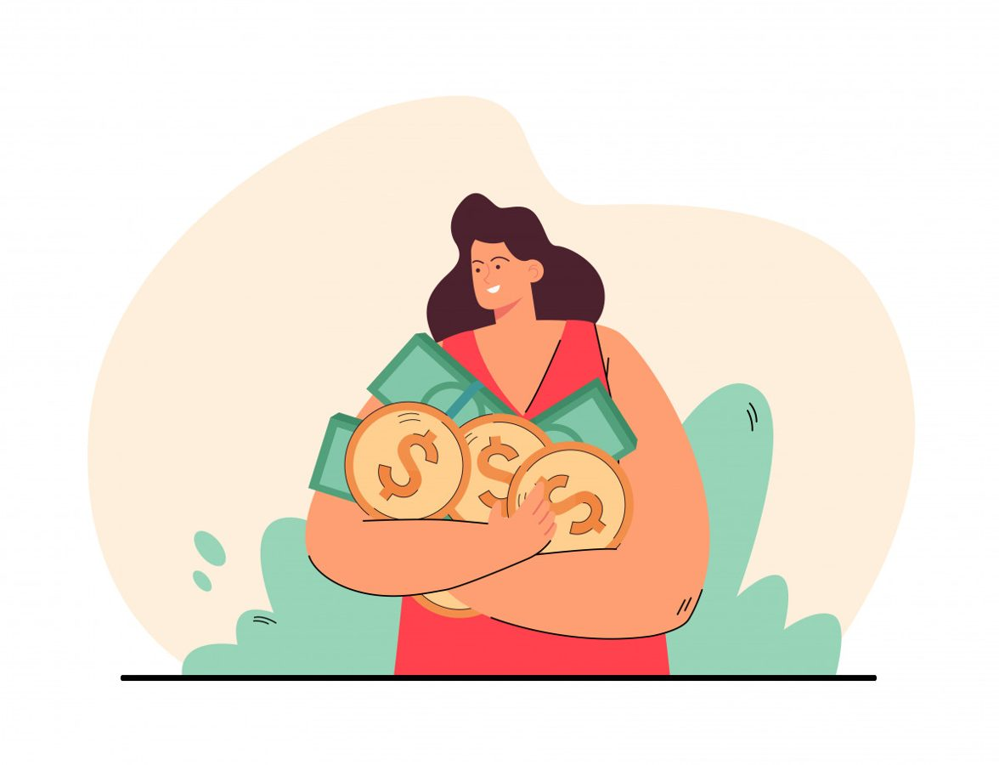

Нам часто кажется, что деньги - это про математику: заработал - получил; потратил - лишился; взял кредит - должен.
Но если бы всё было так просто, не было бы людей, которые много работают, но едва сводят концы с концами. И тех, кто зарабатывает легко, словно деньги сами к ним липнут.
Как психолог, я скажу вам честно: наши отношения с деньгами - это всегда про голову. Про психику. Про сценарии, которые мы даже не осознаём.
Что такое денежный сценарий?
Это программа, которая живет в нашем бессознательном и управляет тем, как мы зарабатываем, тратим, копим и теряем деньги.
Сценарий формируется в детстве. Мы впитываем его из слов родителей, из их отношения к деньгам, из ситуаций, которые наблюдали годами.
Например:
- если родители постоянно экономили и отказывали себе во всем, мы можем вырасти с убеждением «деньги достаются тяжело»;
- если в семье стыдились богатых и говорили «деньги - зло», мы можем бессознательно избегать больших доходов;
- если за любую потраченную копейку ругали, мы можем испытывать вину каждый раз, когда покупаем что-то для себя.
И самое интересное: мы об этом даже не думаем. Просто живем по этим правилам, как по инструкции, которую нам вложили в голову много лет назад.
Почему мы саботируем свои доходы?
В моей практике часто встречаются клиенты, которые искренне хотят зарабатывать больше. Они ставят цели, планируют, действуют. Но что-то идет не так.
Кто-то срывает сделку в последний момент. Кто-то не решается попросить прибавку к зарплате. Кто-то сливает крупную сумму на ненужные вещи сразу после получения.
И это не про глупость или отсутствие дисциплины, а, скорее, про внутренний конфликт: одна часть человека хочет денег, а другая - боится. Или считает, что недостойна. Или помнит мамино «не в деньгах счастье».
Психика устроена так, что она всегда выбирает безопасность. Если в вашей картине мира большие деньги - это опасно, стыдно или «не для таких, как я», мозг сделает всё, чтобы вы оставались в зоне финансового комфорта. Даже если этот комфорт - вечная нехватка денег.
Вторичные выгоды: зачем нам быть бедными?
Еще одна интересная тема, с которой я сталкиваюсь в работе, - это вторичные выгоды. Так называется ситуация, когда наше финансовое положение (даже плохое) нам зачем-то нужно.
Звучит странно, правда? Кому может быть нужно безденежье?
Но если копнуть глубже, часто выясняется:
- «когда нет денег, меня жалеют, а значит, любят»;
- «если я буду богатым, от меня будут требовать помощи»;
- «когда я бедный, я могу ни за что не отвечать»;
- «деньги испортят мои отношения с близкими».
Мы редко проговариваем это вслух. Но подсознание эти формулы отлично знает. И исправно работает на то, чтобы оставить нас там, где «безопасно».
Можно ли это изменить?
Можно. И я знаю это не только как психолог, но и на собственном опыте.
Денежные сценарии - это не приговор. Это просто программы, которые когда-то были кем-то написаны, а значит, их можно переписать.
Но есть нюанс: просто прочитать умную статью или посмотреть видео недостаточно. Нужна практика. Нужно садиться и буквально ручкой на бумаге вытаскивать из себя эти установки, рассматривать их, удивляться, спорить, находить им замену.
Именно поэтому я много лет собирала упражнения, техники и вопросы, которые помогают моим клиентам находить свои денежные блоки и мягко их прорабатывать.
Если вы когда-нибудь задумывались:
- почему деньги приходят к вам с трудом;
- почему не получается накопить;
- почему страшно просить повышение или поднимать цены;
- почему сразу после получения крупной суммы хочется ее потратить;
...значит, ваша психика пытается вам что-то сказать. Осталось только услышать.
Если вам откликнулась эта тема и хочется копнуть глубже - загляните в мой воркбук «Деньги на твоей стороне». Там собраны все упражнения, которые помогают моим клиентам находить свои денежные сценарии и менять их.
Посмотреть содержание воркбука.
Статья опубликована на b17.ru.